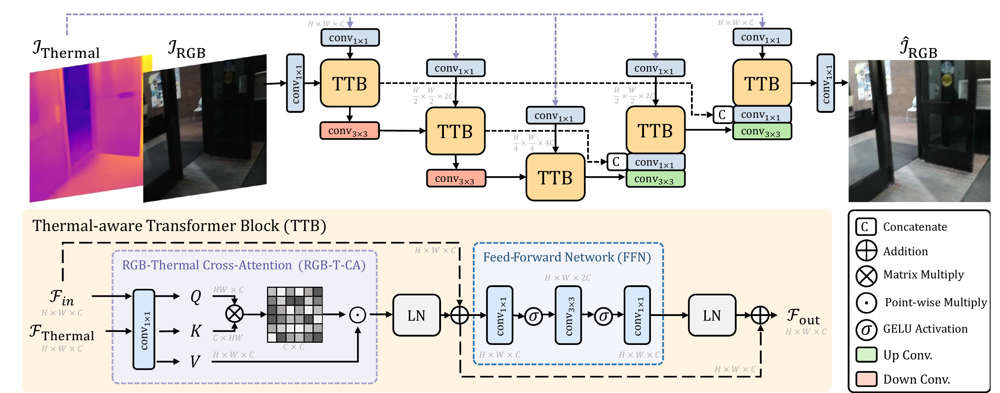
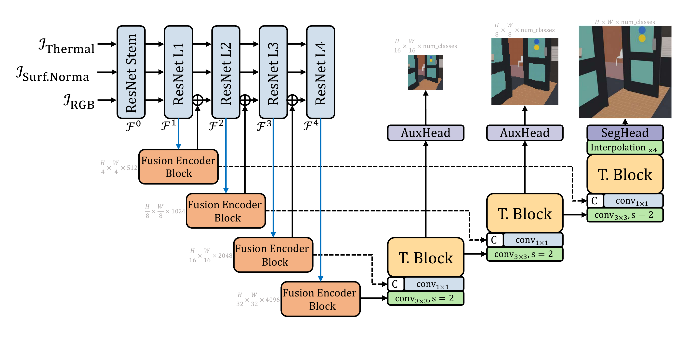
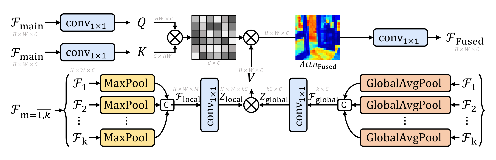
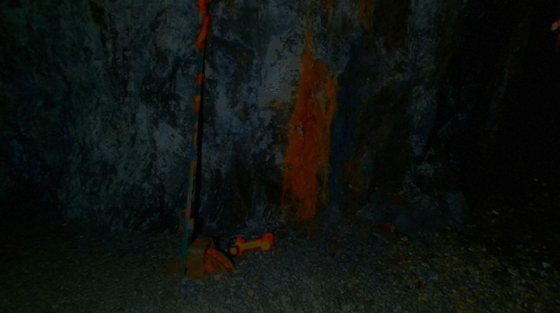
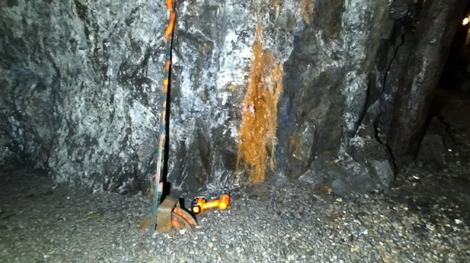
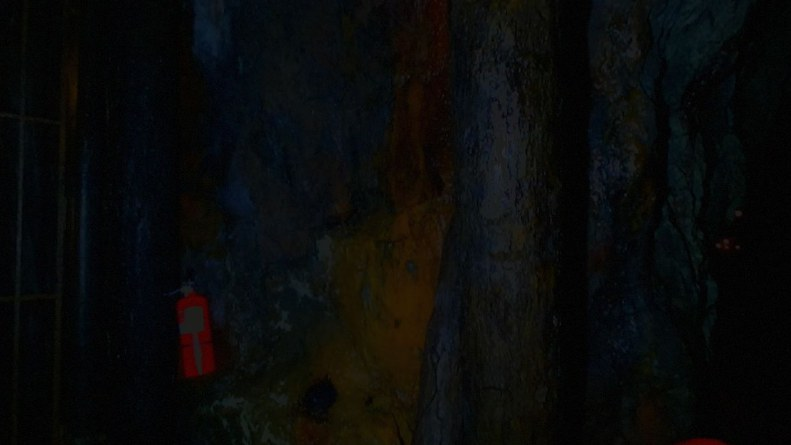
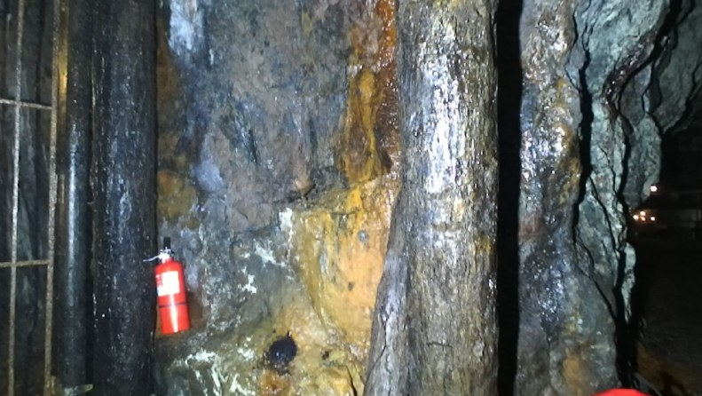
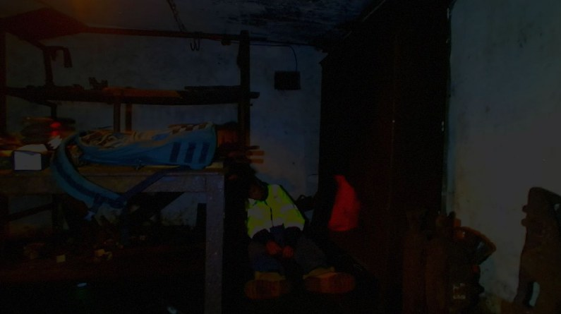
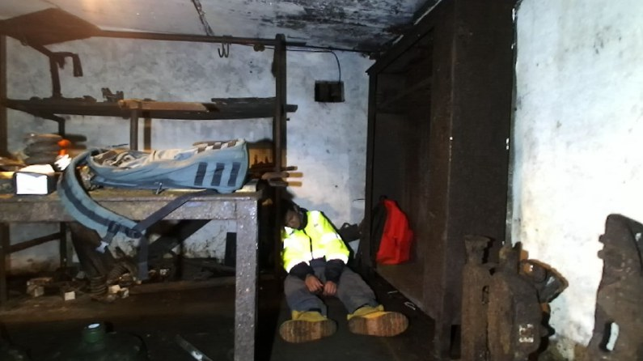
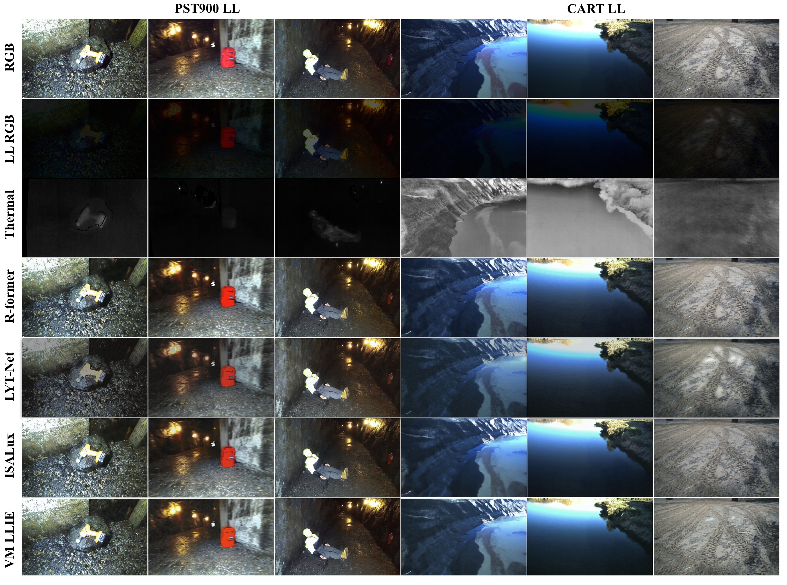

Segmentation breaks when the light goes. We rebuild what the dark removed.
Autonomous systems and UAVs depend on pixel-level scene understanding, yet segmentation accuracy collapses under noise, colour distortion and lost structure in low light. VesperMUSE attacks the problem at three levels: physics-informed low-light data, thermal-guided enhancement, and a modality-agnostic fusion transformer that adds geometric and thermal cues without architectural changes.
Synthetic low-light adaptation
A physics-informed algorithm turns any well-lit RGB set into paired low-light data. The resulting PST900 LL and CART LL match real low-light statistics (SNR ≈ 10.7 dB, γ ≈ 1.00).
Thermal-guided LLIE
A two-level Transformer with RGB-Thermal cross-attention restores colour, edges and texture using the illumination-invariant thermal stream, with only 0.45M parameters.
Modality-agnostic attention
A fusion self-attention fuses global (average-pooled) and local (max-pooled) cues from an arbitrary number of auxiliary inputs, with no change when sensors change.
From a dark frame to a labelled scene.
Select a stage to see what it does. The enhancement branch is optional: the fusion network can read the raw RGB, a low-light frame, or the enhanced frame.

LLIE module. Thermal-aware Transformer Blocks (TTB) combine channel-wise RGB-Thermal cross-attention with a gated feed-forward network in a two-level U-shaped encoder-decoder.

Fusion Vision Transformer. Asymmetric ResNet50 (RGB) and ResNet18 (auxiliary) backbones; every stage fuses features with a Fusion Encoder Block, and a lightweight Transformer decoder with deep-supervision heads produces the final map.

Modality-agnostic attention. Queries and keys come from the primary modality. The value is modulated by local (max-pooled) and global (average-pooled) summaries of k auxiliary modalities, so k can change with no architectural edit. Complexity stays O(HWC).
Synthetic data that behaves like the real thing
Hover a frame to light it up and compare the synthetic low-light version with the original. Image statistics of the generated sets sit next to real low-light benchmarks, not next to naive darkening.






SNR in dB; NMI measures information retained from the well-lit image; a gamma of ≈ 1 matches real low-light capture.
See every stage on PST900.
Five test scenes from the paper's qualitative comparison. Switch between input modalities, ground truth and predictions from VesperMUSE and four recent RGB-T methods.
Scene
Inputs
Predictions
VM LLIE is the low-light configuration and shows the failure cases openly: a near-black frame still defeats it.
State of the art on CART, competitive on PST900.
Mean IoU (%) against recent RGB-T and RGB-D-T methods. VesperMUSE reaches the top overall score on CART and the best IoU on several classes of both datasets, using standard ResNet backbones.
CART
PST900
Per-class IoU — CART (Table 4.4)
Per-class IoU — PST900 (Table 4.3)
Low-light enhancement
The LLIE branch gets within 0.11 dB of the strongest baseline with roughly a quarter of its parameters, and outputs images the segmenter can read.

Qualitative LLIE comparison on PST900 LL (left) and CART LL (right): input, low-light, thermal, Retinexformer, LYT-Net, ISALux and VesperMUSE LLIE.
Where the accuracy comes from.
The tri-input design costs FLOPs (321 G at 480×640, of which depth estimation accounts for 43 G) but stays below the largest competitor in parameter count while leading in accuracy.
Fusion and decoder choices
Choice of primary modality
Enhanced RGB is the best primary stream. Thermal cannot lead, although as an auxiliary it adds more than surface normals.
Use it, cite it.
Code and configurations are released under the Apache-2.0 licence; datasets and pretrained weights are on Google Drive. If VesperMUSE helps your research, please cite: